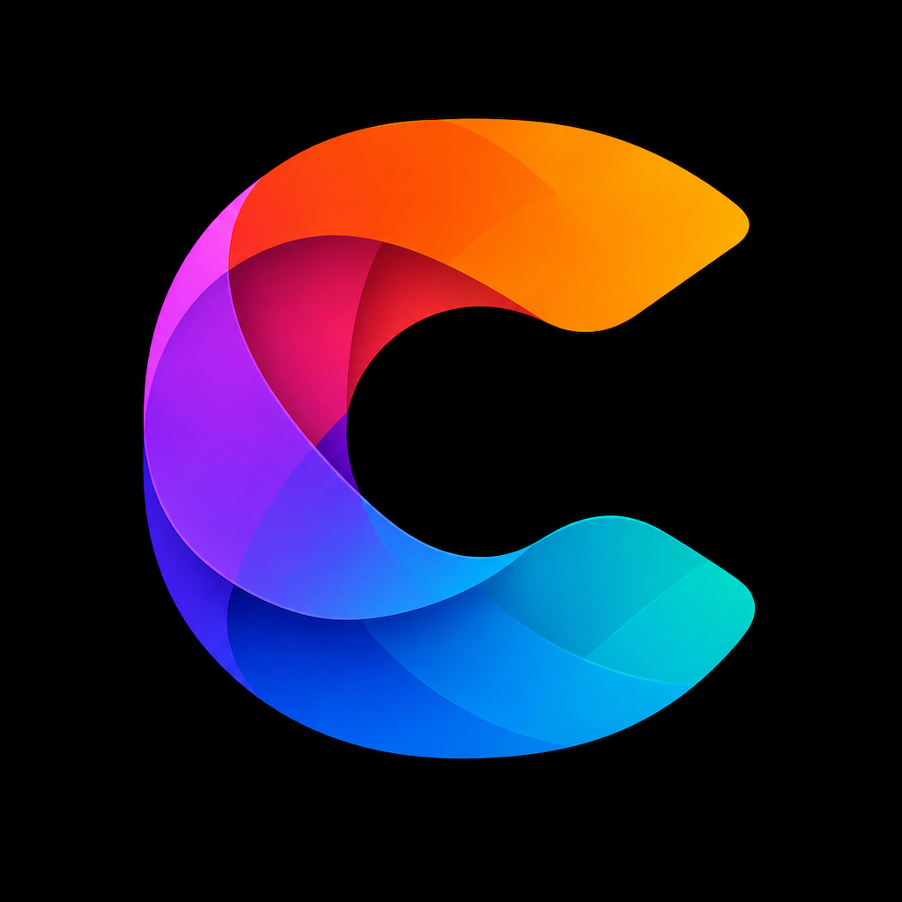

Acknowledgments
Portions of ConcordUI and its development toolchain utilize the following copyrighted material, platforms, and tools. Their use is gratefully acknowledged.
Included open-source software
Apple Inc. — Swift Argument Parser
The ConcordUI command-line tool uses Swift Argument Parser. It is distributed under the Apache License 2.0 with a runtime library exception. Copyright © 2019 Apple Inc. and the Swift project authors.
Project-generation software
Yonas Kolb and contributors — XcodeGen
ConcordUI uses XcodeGen to generate Apple Xcode projects.
MIT License Copyright (c) 2018 Yonas Kolb Permission is hereby granted, free of charge, to any person obtaining a copy of this software and associated documentation files (the "Software"), to deal in the Software without restriction, including without limitation the rights to use, copy, modify, merge, publish, distribute, sublicense, and/or sell copies of the Software, and to permit persons to whom the Software is furnished to do so, subject to the following conditions: The above copyright notice and this permission notice shall be included in all copies or substantial portions of the Software. THE SOFTWARE IS PROVIDED "AS IS", WITHOUT WARRANTY OF ANY KIND, EXPRESS OR IMPLIED, INCLUDING BUT NOT LIMITED TO THE WARRANTIES OF MERCHANTABILITY, FITNESS FOR A PARTICULAR PURPOSE AND NONINFRINGEMENT. IN NO EVENT SHALL THE AUTHORS OR COPYRIGHT HOLDERS BE LIABLE FOR ANY CLAIM, DAMAGES OR OTHER LIABILITY, WHETHER IN AN ACTION OF CONTRACT, TORT OR OTHERWISE, ARISING FROM, OUT OF OR IN CONNECTION WITH THE SOFTWARE OR THE USE OR OTHER DEALINGS IN THE SOFTWARE.
Platforms and development tools
Apple Inc. and the Swift project
Swift, Swift Package Manager, Xcode, SwiftUI, Foundation, and Apple platform SDKs provide the language, build system, native Apple renderer, and platform services used by ConcordUI.
Google LLC and the Android Open Source Project
Android, the Android SDK and NDK, Jetpack Compose, Material components, and Android Studio provide the Android platform, native renderer, APIs, and development environment used by ConcordUI.
JetBrains s.r.o. and contributors
Kotlin provides the Android host and interoperability layer used by generated ConcordUI Android applications.
Gradle Inc. and Gradle contributors
Gradle and the Gradle Wrapper build generated ConcordUI Android projects.
Kitware, Inc. and contributors
CMake supports native Android build configuration.
Swift Android SDK contributors
The Swift Android SDK enables Swift compilation and runtime support for Android. It is distributed under the Apache License 2.0 with a runtime library exception.
GitHub, Inc.
GitHub hosts the ConcordUI repositories, issue tracking, website, and automated GitHub Actions builds.
Apache-licensed material
Swift Argument Parser, the Swift Android SDK, and several Android build and runtime components use the Apache License 2.0. The complete Apache License 2.0 text is available on the ConcordUI license page and from each component’s source distribution.
Trademarks
Apple, Swift, SwiftUI, Xcode, macOS, and iOS are trademarks of Apple Inc. Android, Jetpack Compose, and related marks are trademarks of Google LLC. Kotlin is a trademark of the Kotlin Foundation. Other names may be trademarks of their respective owners. No endorsement is implied.